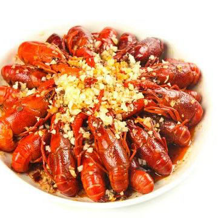
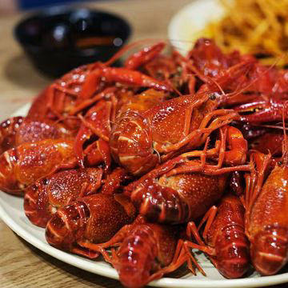
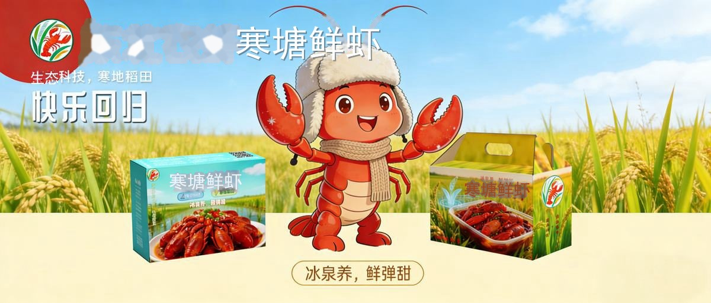

经典系列

经典系列
蒜蓉 · 麻辣 · 十三香,600g 家庭装 / 300g 一人食,家庭聚餐、深夜解馋。
以 EM菌水质调控技术、粪肥发酵肥水技术、精准投喂技术、无环沟稻田捕捞技术、疾病防控技术五大核心技术，从源头保障寒地品质，Q 弹口感背后是硬核科学培育。
南方虾 45 天速成高温催长，我们的虾在 12—22℃冰泉水稻田中慢养 180 天以上，虾肉紧实不软烂，煮熟后弹性是速成虾的 1.7 倍。
虾在稻田中吃天然虫草、浮萍及少量谷物辅食，排泄物反哺水稻，真正零排污养殖。虾体呈冰蓝透亮光泽，腹部洁净无泥腥。
以校园渠道为根基、线上电商为核心轴、B端与高端为延伸,"三位一体 + DTC 直连"构筑全域增长网络。
寒塘"鲜"虾应运而生。项目依托"寒地小龙虾抱仔苗小规格苗种培育技术", 打破"南方垄断、东北缺虾"的产业困局,让科技育种、加热即享的寒地小龙虾走向千家万户。
稻田活水、冰泉滋养,鳃净腹白、肉质紧实 Q 弹,高蛋白低脂肪。
寒地育种技术背书,种苗稳、品质优、可溯源。
7—9 月寒地大虾集中上市,精准填补全国市场空窗期。
-196℃ 液氮单体快速冻结,开袋加热 3—5 分钟,还原现烹般口感。
从 300g 一人食到 1.2kg 聚会礼盒,从经典风味到"贡菜双脆"创新组合,即热即食,开袋加热即可。

蒜蓉 · 麻辣 · 十三香,600g 家庭装 / 300g 一人食,家庭聚餐、深夜解馋。

贡菜 × 蒜蓉/麻辣/十三香,"双脆"创新组合——不止于 Q 弹,更添一份爽脆。

六味合集礼盒,藏青天地盖 / 国潮红飞机盒两种盒型,1.2kg 聚会送礼佳选。

以萌趣小龙虾为原型,搭配雷锋帽、围巾、雪花等东北寒地元素, 打造元气开朗的 IP 形象"虾小北"。依托社媒互动传递品牌温度,拉近用户距离、提升品牌认同。
萌趣 Q 版 + 东北冬装,自带亲切感与记忆点。
表情包、周边、产地溯源内容,让品牌"活"在年轻人社交圈。
把寒地小龙虾从初级养殖推向深加工,让农户增收、产业升级、消费升级。
本土苗种培育与养殖减少跨区域运输成本,同规格 600g 装终端价仅 ¥42。
养殖户亩均增收超 600 元,叠加加工溢价,全产业链利润率较传统模式提升 30% 以上。
推动小龙虾从初级养殖向深加工延伸,形成规模化产业集群效应,助力"中国寒地小龙虾之都"。